Aquí están algunos ejemplos de los proyectos en los que he trabajado:
Grupo Maia
GM se creó como un proyecto final académico. Es empresa de
construcción, situada en Monterrey, N.L.
Todos los datos personales mostrados son ficticios. El documento
original, Excel con macros (.xlsm) se puede descargar dando
clic aquí
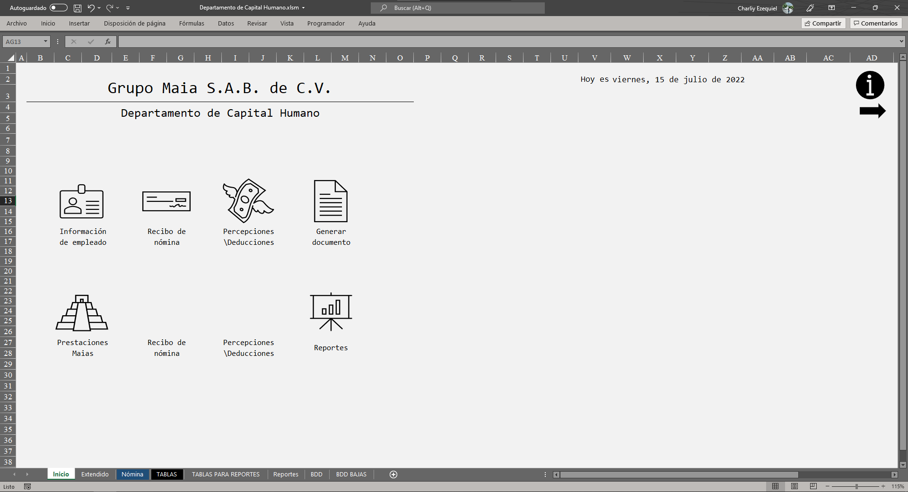
Portada del proyecto en Excel.
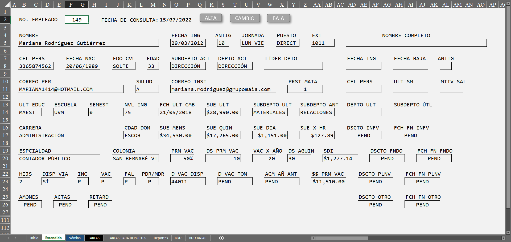
Se obtienen los datos del empleado con sólo ingresar su Número de
empleado.
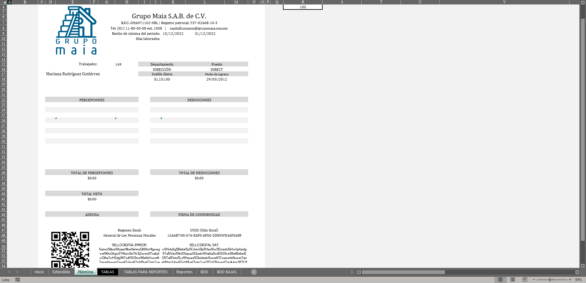
Plantilla de recibo de nómina.
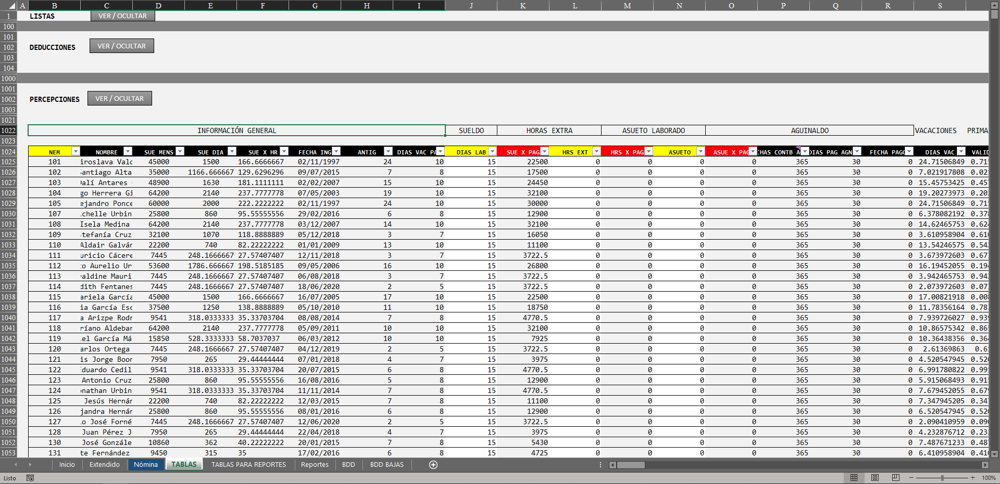
Tablas para cálculo de persepciones, entre vacaciones, aguinaldo,
entre otros.

Práctica de tablas dinámicas.
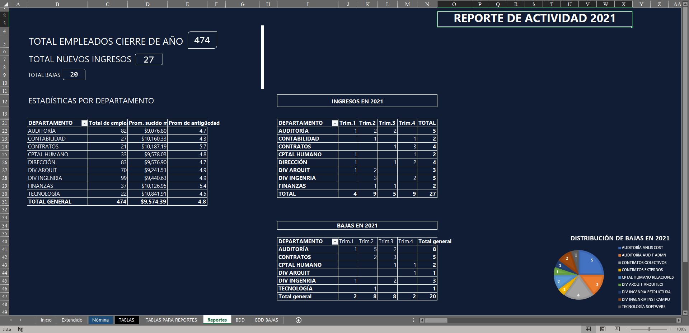
Dashboard que muestra los resultados de un ejercicio anual, con
info de las tablas dinámicas anteriores.
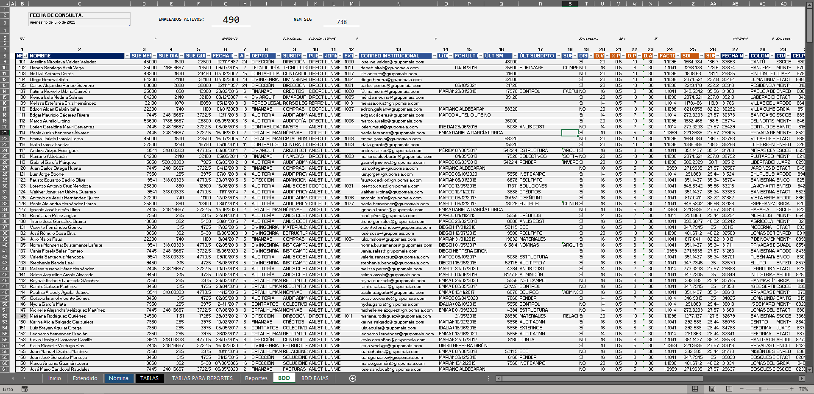
Muestra de la BDD de empleados, de donde se obtiene la info para
el Extendido (2da imagen).

Tabla de amortización para el cálculo de un plan de hogar
(hipoteca).
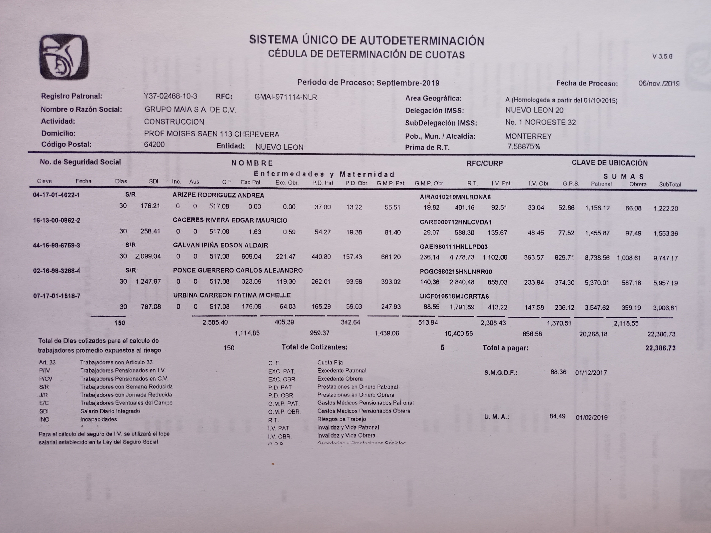
Ejercicios en sistema SUA, del año 2019, con 5 de los empleados de
GM.
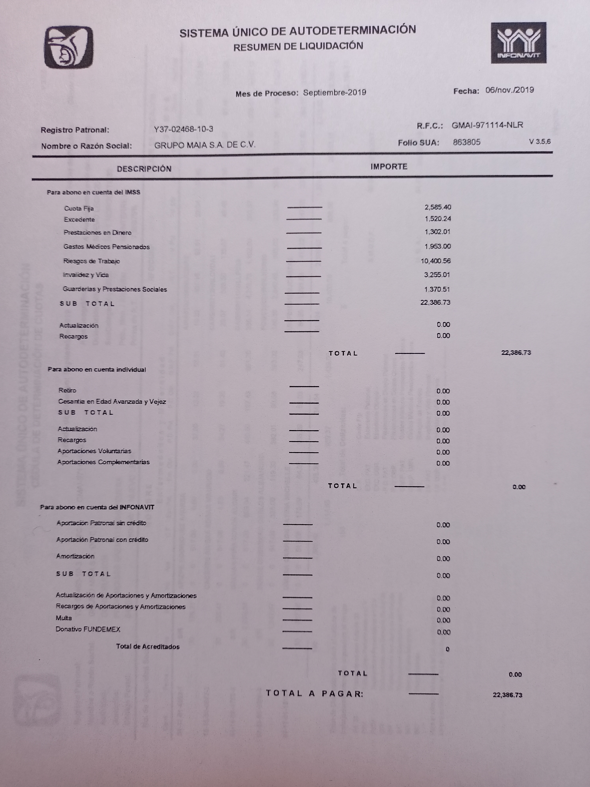
Ejercicios en sistema SUA, del año 2019, con 5 de los empleados de
GM.
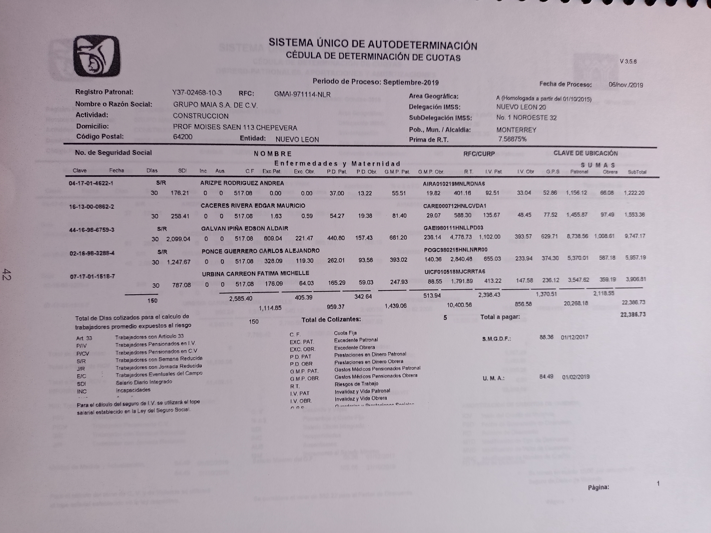
Ejercicios en sistema SUA, del año 2019, con 5 de los empleados de
GM.
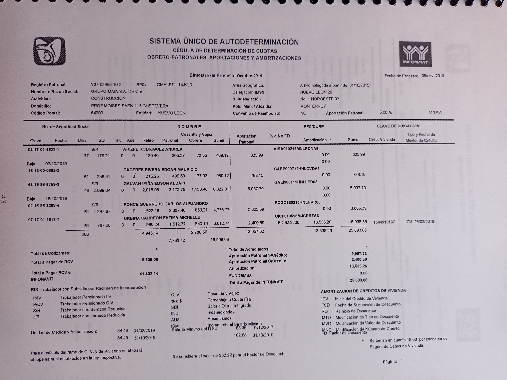
Ejercicios en sistema SUA, del año 2019, con 5 de los empleados de
GM.
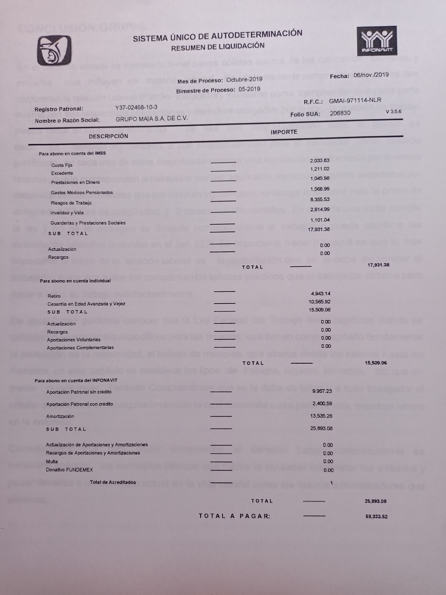
❮
❯
Ejercicios en sistema SUA, del año 2019, con 5 de los empleados de
GM.
Brand's Etc.
El concentrado de ventas que creé en 2019 para el punto en el que
laboraba. Fue una inciativa para digitalizar el registro de ventas que
hasta el momento se llevaba en papel, y tener una visualización del
progreso mensual.
El documento original, Excel (.xlsx) se puede descargar dando
clic aquí

Gráfica del progreso mensual con fechas. Montos acumulados en la
primer imagen y monto diario en la segunda.
Otros proyectos
Ejercicios independientes para sólo practicar.
Los documentos originales, Excel (.xlsm) se puede descargar dando
Calendario:
clic aquí
Contabilidad financiera:
clic aquí

Ejercicio que hice para primer semestre, en clase de contabilidad financiera (2018), donde se llenaban en automático cada celda de las columnas con la información vaciada en las primeras dos hojas.
Mis pasatiempos
No soy fotógrafo, pero aquí algunas de las mejores capturas que he tomado.
A veces hago videos para YouTube.

A veces practico senderismo en las montañas del estado